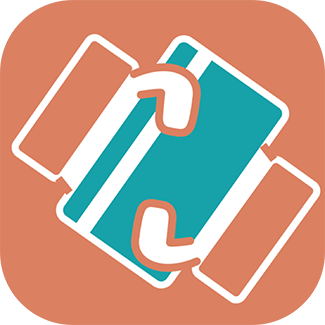

使用者研究

代刷幫手
想要的信用卡優惠，卻沒有指定的性用卡？ 透過代刷幫手，代刷優惠免辦卡立即享。 代刷幫手是由Credit4U團隊製作的平台，分別各有 一位行銷，產品設計，WEB與ios，共四位組成的 team。代刷幫手所提供的服務，是讓消費者透過平 台，能找到想要與便宜的商品，而提供帶刷服務的 人，可以透過代刷幫手，媒合到他的消費族群，由 此一來，消費者可以用更優惠的價格購買到他想要 的東西，而提供者，可以得到他想要的累積消費金 額，或是現金回饋。 連結網址：http://www.credit4upro.com/